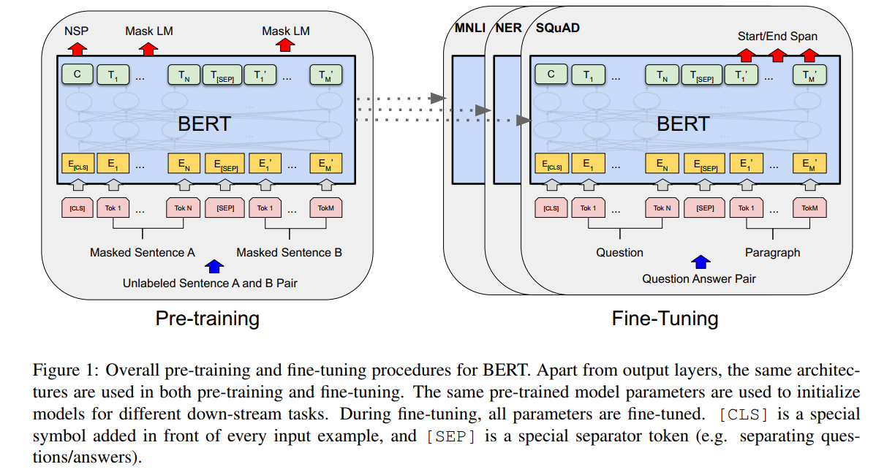
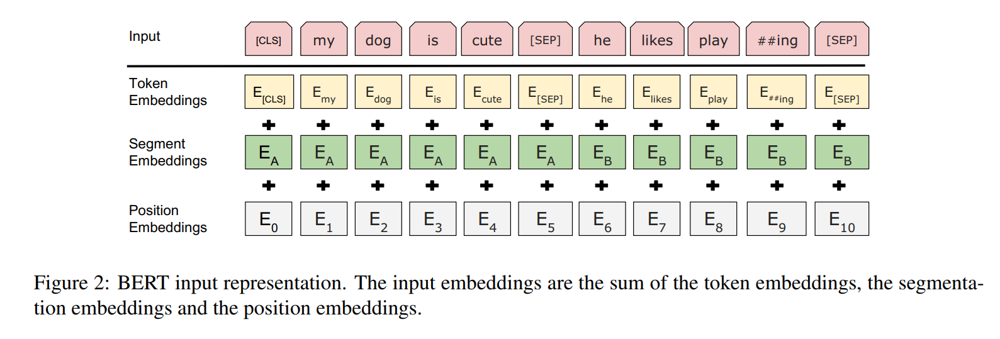
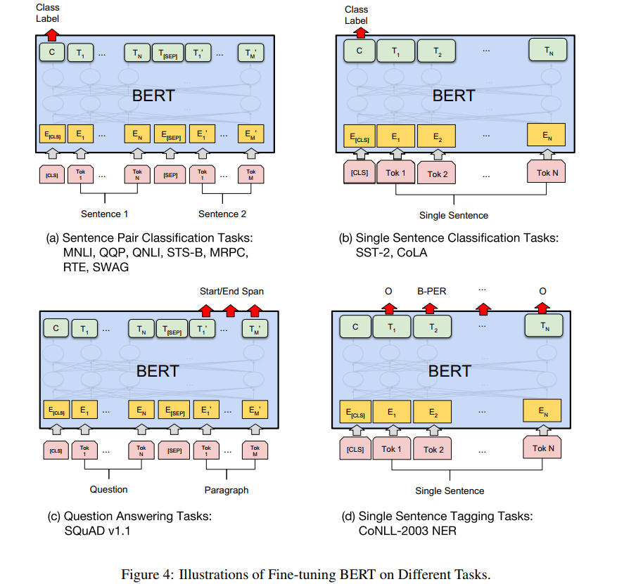
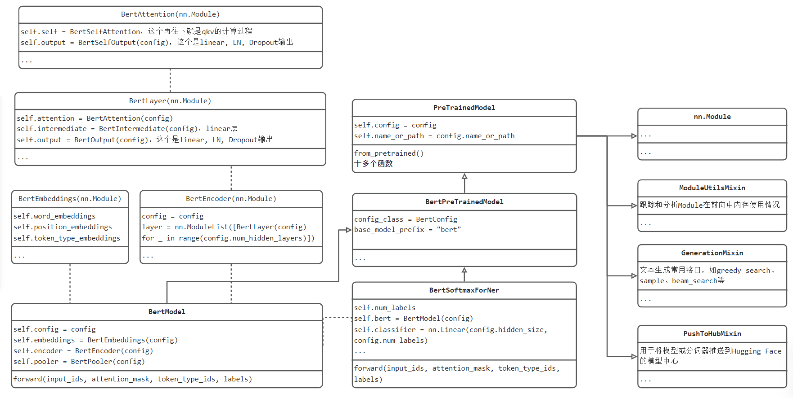
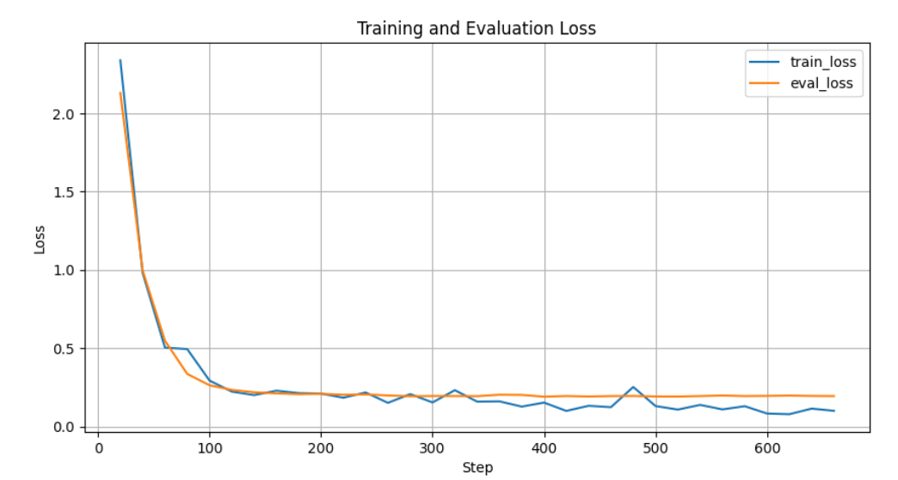

9.5 命名实体识别—BERT
前言
本节介绍一个NLP领域划时代意义的模型——BERT（Bidirectional Encoder Representations from Transformers），BERT论文目前的引用超9万次！（2024年2月），BERT模型架构是的NLP中各类任务也可以使用预训练+微调范式（类似CV领域）。
本节将简牍BERT论文，然后介绍采用BERT进行NER（Named Entity Recognition，命名实体识别）任务的微调，通过论文了解BERT的发展，同时通过具体下游任务，了解如何对预训练好的BERT模型进行微调，来适应下游任务。本节不涉及BERT的预训练。
BERT论文略读
《BERT: Pre-training of Deep Bidirectional Transformers for Language Understanding》（https://arxiv.org/abs/1810.04805）
摘要：前人优秀工作仅用了单向信息且不能很好的应用到各类下游任务，本文提出一种基于Transformer的双向处理预训练模型——BERT，在预训练完成后，采用统一的结构进行多个NLP下游任务微调，均达到SOTA。
BERT模型关键词：预训练；双向信息；MLM（Masked Language Model）预训练任务；NSP（Next Sentence Predict）预训练任务
预训练相关工作
BERT之前的ELMo和GPT都是预训练机制，并且取得不错成绩，但他们都是基于单向的，存在缺点。
BERT为了解决单向预训练带来的不足，引入了MLM和NSP两个预训练任务，让模型能够从双向来理解语言。
BERT模型结构

BERT的构建与使用分为两个阶段，预训练和微调。所有下游任务微调时，均采用预训练好的参数进行全局初始化、全局训练。
BERT模型结构很简单，完全基于Transformer的encoder，并且有base和large两个版本，attention block、hidden size 和 head分别为(L=12, H=768, A=12, Total Parameters=110M) (L=24, H=1024,A=16, Total Parameters=340M)。
BERT的输入设计很巧妙，使得一个结构适应了多个NLP任务。输入设计为序列形式，将一个句子、两个句子都组装成为一个序列，输入到模型中。输入上，设计了两个特殊的token，cls和sep。
- cls：可以理解为序列的全局特征，用于文本分类、情感分析这类的seq2cls的任务。
- sep：用于将句子1和句子2进行拼接的token
在embedding处理上，设计了额外的segment embedding来标记句子是第一句、还是第二句。具体的输入embedding由三部分组成，如下图所示：

BERT的预训练——MLM
BERT的第一种预训练任务是MLM（masked language model），是对一句话中的一些单词进行隐藏，然后让模型根据上下文内容，在该mask的token位置上要求预测该单词。例如：“白切鸡” 经过MLM处理变为 “白mask鸡”，输入到BERT模型，BERT模型的输出标签是“白切鸡“。
在进行mask是需要一定概率的，文章中对全文的15%的token进行遮罩，然后这15%里，80%真正变为mask，10%为随机token，10%为原始token。这么做的原因是，下游任务中并没有mask这个特殊token，为了保障微调时的性能，这里做了这样的设置。（ a downside is that we are creating a mismatch between pre-training and fine-tuning, since the [MASK] token does not appear during fine-tuning. ）
BERT的预训练——NSP
BERT的第一种预训练任务是NSP（Next Sentence Prediction），由于NLP任务中有一些是需要理解两个句子之间的关系，例如QA和NLI任务。为了让BERT掌握句子之间的理解能力，设计了NSP。
NSP是一个二分类任务。输入的是两个句子组成的序列，输出的是IsText or Not Text。含义是这两个句子是否是前后两句。论文举的例子：
Input = [CLS] the man went to [MASK] store [SEP] he bought a gallon [MASK] milk [SEP]
Label = IsNext
Input = [CLS] the man [MASK] to the store [SEP] penguin [MASK] are flight ##less birds [SEP]
Label = NotNext
预训练实验
预训练采用了2个数据集：BooksCorpus (800M words) (Zhu et al.,2015) and English Wikipedia (2,500M words)。
预训练参数及耗时如下：bs=256, epoch=40, 100万step, 1万step预热, lr=1e-4, base:16个TPU训4天, large:64个TPU训4天。
BERT的微调——下游任务
有了预训练好的BERT模型，可以快速方便的应用到各类NLP的下游任务，直接看下图列举的四种典型的任务：
（1）seq2cls：输入是多个句子，用sep拼接，输出用cls的特征向量接softmax实现分类。
（2）seq2cls：输入是单个句子，处理同上。
（3）seq2seq：输入是两段话构成的序列，输出是第二段话中要求各token输出3个类别，用于标记哪些是答案的开始、答案的结束和无关内容。可以理解为词表为3的序列生成任务。
（4）seq2seq：输入是一句话，输出是每个token的分类类别，类别数根据任务而定，例如NER任务中，类别数是（实体种类*2 + 1），一个实体需要两个类别，实体开始和实体结束两个标记，1表示无关类别。

下游任务微调实验
超参数基本固定，可以套用大部分任务：
- Learning rate (Adam): 5e-5, 3e-5, 2e-5
Number of epochs: 2, 3, 4
Batch size: 16, 32
且采用的计算资源也很少，单个TPU一小时，单GPU几个小时即可，真实亲民的好模型。
论文小结
BERT是在ELMo和GPT之后提出来的一种基于Transformer的Encoder实现双向信息交互的预训练架构，并且可在一个模型结构上实现多种下游任务的微调，具有统一结构。BERT对于NLP的预训练-微调，算得上开创性的作品，为NLP微调范式打开了大门，后续的NLP任务大多基于BERT范式。
本论文需重点学习的几点如下：
- BERT最大亮点是双向信息交互和MLM+NSP的预训练-微调范式；
- MLM执行时，15%选中为mask候选token，再根据8:1:1比例进行真mask、随机token、原始token的设置
- NSP任务采用sep特殊的token来拼接句子，实现一个序列输入，包含多个句子，sep的引入为模型统一多个任务提供了可能
- 预训练耗时4天，微调仅需数小时，此方案非常亲民。
NER任务简介
命名实体识别（Named Entity Recognition，简称 NER）是自然语言处理（NLP）中的一个基础任务，旨在识别文本中具有特定意义的实体，如人名、地名、组织名、时间、金额等。NER 通常用于信息提取、知识图谱构建、文本分类等任务的前置任务，属于基础任务。
NER数据的标注通常采用BIO体系来对文本中的每个token进行逐token的打标签（三分类），Begin表示实体开头，Inside表示实体中间/结尾，Outside表示非实体。简而言之，NER是逐token的多分类问题。分类类别等于（实体种类*2 + 1），一个实体需要B和I两个类别标记，所有实体共用一个无关类别O。
具体地，看一个文本： “苹果公司计划在2023年在中国深圳建立一家新工厂”，假设有三种实体类别，分别是组织、地名、时间。那么对应的NER训练标签为B-ORG, I-ORG, O, O, B-TIME, O, B-LOC, I-LOC, O, O, O, O。对应关系是
苹果 公司 计划 在 2023年 在 中国 深圳 建立 一家 新 工厂，由此可知“苹果公司”是组织， “2023年”是时间， “中国深圳”是地名。
接下来将会采用CLUENER 细粒度命名实体识别数据进行实验。
数据集构建
数据集下载
根据BERT论文的微调示意图和上文对NER的介绍，已经知道NER的数据制作目标是做一个token级别的多分类任务，下面就来观察数据。
首先下载CLUENER2020(https://github.com/CLUEbenchmark/CLUENER2020), 得到cluener_public.zip，解压后得到3个主要的json，分别是训练集、验证集和测试集。其中测试集没有标注标签。
以一条具体的数据介绍，一条数据包括原文本text，标签label，label中存在多个实体的标注，以字典形式，key是实体类别，value是具体内容以及字符的开始与结束字符。
{"text": "虚幻引擎3动作游戏《黑光》新作公布", "label": {"game": {"《黑光》": [[9, 12]]}}}
数据分为10个标签类别，分别为:
地址（address），书名（book），公司（company），游戏（game），政府（goverment），电影（movie），姓名（name），组织机构（organization），职位（position），景点（scene）。
在代码中对应的模型标签为(B表示Begin, I表示inside, O表示outside)：
["X", "B-address", "B-book", "B-company", 'B-game', 'B-government', 'B-movie', 'B-name',
'B-organization', 'B-position','B-scene',"I-address",
"I-book", "I-company", 'I-game', 'I-government', 'I-movie', 'I-name',
'I-organization', 'I-position','I-scene',
"S-address", "S-book", "S-company", 'S-game', 'S-government', 'S-movie',
'S-name', 'S-organization', 'S-position',
'S-scene','O',"[START]", "[END]"]
整套代码借鉴https://github.com/lonePatient/BERT-NER-Pytorch，因此直接分析数据集编写部分，是如何将原始json解析为模型需要的形式。
数据集解析
根据utils_ner.py中的read_json函数，可以看出对json中的数据是如何做处理的。
最终数据被解析为：
words = ['万', '通', '地', '产', '设', '计', '总', '监', '刘', '克', '峰', '；']
labels = ['B-company', 'I-company', 'I-company', 'I-company', 'B-position', 'I-position', 'I-position', 'I-position', 'B-name', 'I-name', 'I-name', 'O']
def _read_json(self,input_file):
lines = []
with open(input_file, 'r', encoding='utf-8') as f:
for line in f:
line = json.loads(line.strip())
text = line['text']
label_entities = line.get('label',None)
words = list(text)
labels = ['O'] * len(words)
if label_entities is not None:
for key,value in label_entities.items():
for sub_name,sub_index in value.items():
for start_index,end_index in sub_index:
assert ''.join(words[start_index:end_index+1]) == sub_name
if start_index == end_index:
labels[start_index] = 'S-'+key
else:
labels[start_index] = 'B-'+key
labels[start_index+1:end_index+1] = ['I-'+key]*(len(sub_name)-1)
lines.append({"words": words, "labels": labels})
return lines
DataSet构建
对于BERT模型输入需要有3个内容，分别是token的index， mask的index， segment的index，下面是一条具体数据的情况。
02/22/2024 23:05:43 - INFO - processors.ner_seq - tokens: [CLS] 浙 商 银 行 企 业 信 贷 部 叶 老 桂 博 士 则 从 另 一 个 角 度 对 五 道 门 槛 进 行 了 解 读 。 叶 老 桂 认 为 ， 对 目 前 国 内 商 业 银 行 而 言 ， [SEP]
02/22/2024 23:05:43 - INFO - processors.ner_seq - input_ids: 101 3851 1555 7213 6121 821 689 928 6587 6956 1383 5439 3424 1300 1894 1156 794 1369 671 702 6235 2428 2190 758 6887 7305 3546 6822 6121 749 6237 6438 511 1383 5439 3424 6371 711 8024 2190 4680 1184 1744 1079 1555 689 7213 6121 5445 6241 8024 102 0 0 0 0 0 0 0 0 0 0 0 0 0 0 0 0 0 0 0 0 0 0 0 0 0 0 0 0 0 0 0 0 0 0 0 0 0 0 0 0 0 0 0 0 0 0 0 0 0 0 0 0 0 0 0 0 0 0 0 0 0 0 0 0 0 0 0 0 0 0 0 0 0 0 0 0
02/22/2024 23:05:44 - INFO - processors.ner_seq - input_mask: 1 1 1 1 1 1 1 1 1 1 1 1 1 1 1 1 1 1 1 1 1 1 1 1 1 1 1 1 1 1 1 1 1 1 1 1 1 1 1 1 1 1 1 1 1 1 1 1 1 1 1 1 0 0 0 0 0 0 0 0 0 0 0 0 0 0 0 0 0 0 0 0 0 0 0 0 0 0 0 0 0 0 0 0 0 0 0 0 0 0 0 0 0 0 0 0 0 0 0 0 0 0 0 0 0 0 0 0 0 0 0 0 0 0 0 0 0 0 0 0 0 0 0 0 0 0 0 0
02/22/2024 23:05:44 - INFO - processors.ner_seq - segment_ids: 0 0 0 0 0 0 0 0 0 0 0 0 0 0 0 0 0 0 0 0 0 0 0 0 0 0 0 0 0 0 0 0 0 0 0 0 0 0 0 0 0 0 0 0 0 0 0 0 0 0 0 0 0 0 0 0 0 0 0 0 0 0 0 0 0 0 0 0 0 0 0 0 0 0 0 0 0 0 0 0 0 0 0 0 0 0 0 0 0 0 0 0 0 0 0 0 0 0 0 0 0 0 0 0 0 0 0 0 0 0 0 0 0 0 0 0 0 0 0 0 0 0 0 0 0 0 0 0
02/22/2024 23:05:44 - INFO - processors.ner_seq - label_ids: 31 3 13 13 13 31 31 31 31 31 7 17 17 31 31 31 31 31 31 31 31 31 31 31 31 31 31 31 31 31 31 31 31 31 31 31 31 31 31 31 31 31 31 31 31 31 31 31 31 31 31 31 0 0 0 0 0 0 0 0 0 0 0 0 0 0 0 0 0 0 0 0 0 0 0 0 0 0 0 0 0 0 0 0 0 0 0 0 0 0 0 0 0 0 0 0 0 0 0 0 0 0 0 0 0 0 0 0 0 0 0 0 0 0 0 0 0 0 0 0 0 0 0 0 0 0 0 0
在这里会用到预训练模型的字典来做tokens到input_ids的映射，例如[CLS]就是101类，[PAD]是0类，浙是3851类。
以上功能在以下两个地方体现。
- run_ner_softmax.py 的 train_dataset = load_and_cache_examples(args, args.task_name,tokenizer, data_type='train')
- processors/ner_seq.py 的 features = convert_examples_to_features(examples=examples,
在此份代码中，采用了 dataset = TensorDataset(all_input_ids, all_input_mask, all_segment_ids, all_lens,all_label_ids) 的方式构建dataset。
模型构建
BERT模型已成为NLP任务中常用的模型，因此已得到很好的集成，目前大多采用HuggingFace的transformers库进行构建BERT。
构建BERT模型有三要素，分别是配置文件，模型本体，tokenizer。
配置文件BertConfig
配置文件用class transformers.BertConfig封装，包含以下主要内容，从参数大概就明白，BERT模型的大小、向量大小、层数等都在这里面配置。
通常这个配置内容是跟着预训练模型的信息走的，需要从磁盘中加载config.json文件，例如本案例使用的预训练模型是从https://huggingface.co/google-bert/bert-base-chinese/tree/main下载，里边就包含了配置文件。
def __init__(
self,
vocab_size=30522,
hidden_size=768,
num_hidden_layers=12,
num_attention_heads=12,
intermediate_size=3072,
hidden_act="gelu",
hidden_dropout_prob=0.1,
attention_probs_dropout_prob=0.1,
max_position_embeddings=512,
type_vocab_size=2,
initializer_range=0.02,
layer_norm_eps=1e-12,
pad_token_id=0,
position_embedding_type="absolute",
use_cache=True,
classifier_dropout=None,
**kwargs
):
模型本体
BERT本身这个nn.Module就复杂一些，除了实现BERT运算功能，还涉及huggingface的协议、功能，所以最终应用的模型类BertSoftmaxForNer是继承了官方BertPreTrainedModel，并且内部定义了官方BertModel模型，用于BERT的运算；同时在BertSoftmaxForNer内部，进行适当的代码修改，用于实现下游任务以处理逻辑。
类代码具体的定义与关系可参考如下UML示意图：BertSoftmaxForNer是核心，往左边是BertModel模型的核心，BertModel与上节Transformer一样，拆分了多个子模块来构建，因此第一列整体是BERT的构建，值得注意的是三个embedding的构建。
捋清楚模型类定义后，再看模型初始化就会清楚真正用的模型是怎么来的:
model = model_class.from_pretrained(args.model_name_or_path, config=config)
根据config配置，模型权重文件，借助PreTrainedModel类的from_pretrained()函数，实现模型定义、权重加载。
模型训练
模型训练采用run_ner_softmax.py，主要修改预训练文件路径、数据集路径、输出路径即可，具体的运行参数如下所示
--model_type=bert
--model_name_or_path=./bert-base-pretrained
--task_name=cluener
--do_lower_case
--loss_type=ce
--do_train
--do_eval
--data_dir=G:\deep_learning_data\cluener_public
--train_max_seq_length=128
--eval_max_seq_length=512
--per_gpu_train_batch_size=64
--per_gpu_eval_batch_size=64
--learning_rate=3e-5
--num_train_epochs=4.0
--logging_steps=20
--save_steps=224
--output_dir=D:\github_desktop\BERT-NER-Pytorch\outputs
--overwrite_output_dir
--seed=42
BERT的微调大多是4epoch，很快就见效，笔记本上训练大约10分即可完成，接下来观察一下训练效果。
首先来看loss曲线，运行01_loss_curve_plot.py，可以查看loss曲线变化，如下图所示：

从曲线看，loss下降很快，并且迅速到达了平台期，F1快速达到了0.79，训练效果较好。
补充说明：本节的训练代码写得不是很优雅，就不过多讨论，后续应该不会再遇到类似结构的代码。
模型推理
模型训练好之后，来看看在测试集上的推理效果。
首先，run_ner_softmax.py代码已经实现推理预测功能，把--do_train --do_eval去掉，保留 --do_predict即可得到test_prediction.json。
然后，运行02_predict_parse.py，可以看到解析结果。例如：
从文本"四川敦煌学”。近年来，丹棱县等地一些不知名的石窟迎来了海内外的游客，他们随身携带着胡文和的著作。"中，提取到实体 organization "四川敦煌学"， address "丹棱县"， name "胡文和"，
从文本"尼日利亚海军发言人当天在阿布贾向尼日利亚通讯社证实了这一消息。"中，提取到实体 government "尼日利亚海军"， address "阿布贾"， company "尼日利亚通讯社"，
从文本"销售冠军：辐射3-Bethesda"中，提取到实体 game "辐射3"，
从文本"所以大多数人都是从巴厘岛南部开始环岛之旅。"中，提取到实体 scene "巴厘岛"，
从文本"备受瞩目的动作及冒险类大作《迷失》在其英文版上市之初就受到了全球玩家的大力追捧。"中，提取到实体 game "《迷失》"，
从文本"filippagowski：14岁时我感觉自己像梵高"中，提取到实体 name "filippagowski"， name "梵高"，
小结
本节通过论文+代码的形式来介绍BERT模型的应用，通过实验发现BERT的出现，为NLP各类任务提供了方便。为此，有必要再次回顾一下BERT模型的特性：
（1）基于Transformer的encoder，实现双向信息的编码融合，提高上下文理解能力，并设计预训练+微调范式，实现多个NLP任务的统一架构——BERT；
（2）BERT采用的无监督预训练方法为MLM（masked language model）和NSP（next sentence predict），可以实现token级和句子级的信息学习；
（3）BERT的各任务微调，通常指需要4epoch，学习率1e-5级别，gpu几个小时即可，非常亲民；
（4）BERT的输入embedding新增了一个segment embedding来标记句子当前token属于第几个句子；
（5）BERT的统一架构实现多个任务，得益于输入-输出的设计，有必要再次回顾这幅图